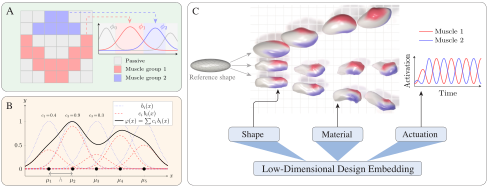
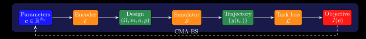
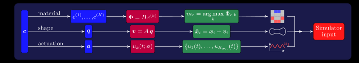
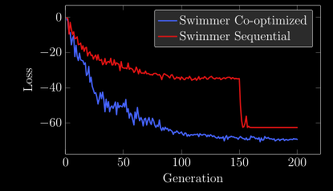
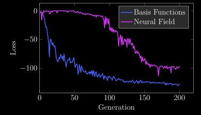
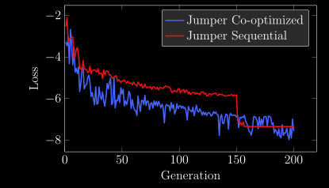
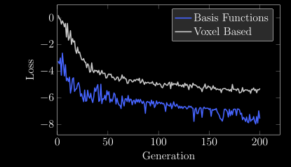
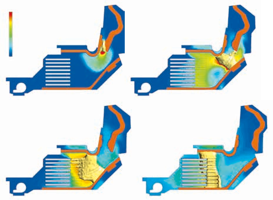

Computational Scientist
BSc Aerospace Engineering
September 2020 – September 2023Università di Padova · 110/110 cum laude · GPA 28.9/30
MSc Mathematical Engineering
September 2023 – March 2026Politecnico di Milano · 110/110 cum laude · GPA 29.6/30
R&D Internship
February 2025 – August 2025ABB Research Center, Baden, Switzerland · Numerical simulation of circuit breakers
Master's Thesis
September 2025 – March 2026ETH Zurich, Soft Robotics Lab, Switzerland · Design optimization for soft robots
R&D Internship
March 2026 – PresentDassault Systèmes, Stuttgart, Germany · ML-driven boundary conditions for LBM fluid simulation


Optimization pipeline

Decoding pipeline
Swimmer Optimization
Joint vs sequential optimization

Basis functions vs neural field

Jumper-Flipper Optimization
Joint vs sequential optimization

Basis functions vs per-voxel

Time Domain Impedance BC for Lattice Boltzmann Solver
Internship at Dassault Systèmes: implementing a machine learning model for time-domain impedance boundary conditions (TDIBC) for acoustic liners within a lattice Boltzmann simulation framework, with applications in jet engines.
The public repository linked below is a minimal single-file C solver with no dependencies, built as an initial test. It implements a D2Q9 LBM with reflective solid wall boundary conditions and outputs compatible with ParaView.
View on GitHubThe video below shows a 2D LBM simulation with TDIBC for an acoustic liner, unlike the public repository, which uses purely reflective walls.
Acoustic wave simulation (Blender render, full solver with acoustic liner BCs)
Circuit Breaker Simulation
Simulation tools for circuit breaker design, involving coupled electromagnetics, radiation transport, and fluid dynamics.
Contributed to a radiation transport model and reviewed the electromagnetic solver code.

Temperature [K] 20,000 300Circuit breaker transient simulation